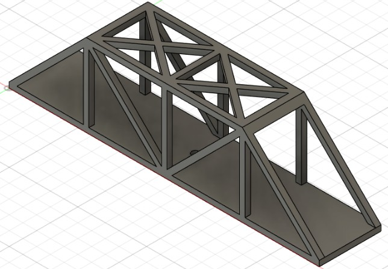
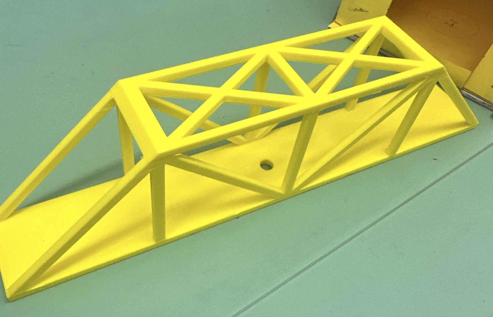

STRUCTURAL DESIGN / CAD / TESTING
CAD Bridge Design & Load Testing
Mechanical design project focused on CAD modeling, structural analysis, 3D printing, and experimental load testing.

Overview
This project involved designing, analyzing, and 3D printing a truss bridge for a structural load-testing competition. The bridge was designed in Fusion 360 and evaluated using a Method of Joints analysis before being fabricated and physically tested.
The project connected computer-aided design, structural analysis, additive manufacturing, and experimental testing into a single engineering design process.
Design Constraints
The bridge had to satisfy a number of geometric, manufacturing, and structural requirements before testing.
- The bridge had to span a 10-inch gap.
- The width had to allow a standard Hot Wheels car to pass through the bridge.
- The bridge height could not exceed 3 inches.
- The structure had to consist of two identical trusses connected by stringers or cross-members.
- The bridge had to be 3D printed from PLA as one piece.
- The total bridge mass could not exceed 125 grams.
- The bridge required a 1 × 1 inch loading area with a ¼-inch diameter through-hole.
- A roadway had to extend across the entire bridge.
CAD Design
The bridge was modeled in Fusion 360 before fabrication. The CAD model was used to establish the overall geometry, dimensions, truss arrangement, and member placement.
The final design was also prepared for 3D printing, including generation of the G-code used to fabricate the physical prototype.

Structural Analysis
The truss was analyzed using the Method of Joints to determine the load carried by each member and whether individual members were in tension or compression.
The analysis document included the bridge geometry, design dimensions, and the complete truss analysis used during the design process.
Physical Prototype
After completing the CAD design and structural analysis, the bridge was 3D printed in PLA. The physical prototype was then prepared for load testing to evaluate its performance under increasing load.

Final 3D-printed bridge prototype.
Load Testing
The completed bridge was subjected to physical loading until failure. The test provided an opportunity to compare the predicted structural behavior with the behavior of the fabricated bridge.
Engineering Takeaways
This project provided hands-on experience taking a mechanical structure from an initial concept through CAD modeling, structural analysis, fabrication, and physical testing.
It also demonstrated the importance of balancing structural performance, geometry, material usage, manufacturing constraints, and weight when developing an engineering design.